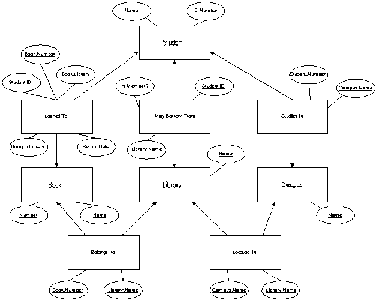

The DataBase Course
Solution of Exercise No. 1
Entity-Relationship, Network and Relational Models
Question 1
Definition of the relations and their attributes (a key is marked with an underline):
"Library" - Name
"Campus" - Name
"Student" - ID Number, Name
"Book" - Number, Name (this is a weak entity set, the full key is number + Library.Name)Definition of relationships and their type:
Library "Located in" Campus - Many to one
Book "Belongs to" Library - Many to one
Student "Studies in" Campus - Many to many
Book "Borrowed to" Student - Many to one. This relation has attributes: Return date, and 'Through library' which contains the library through which the book was borrowed, or null if the book was borrowed directly from the library that owns the book.
Student "May Borrow From" Library - Many to many. This relation has one attribute 'is Member?', which is true if the student is a member of the library, and false if the student is not a member but may borrow books from that library using inter-library loan.Remarks:
1. Other combinations of relations, like using a triple relation "Loan" between Student, Book and Library, or using two separate relations to represent the two kinds of "May Borrow From", and allowed as long as they contain all of the above information.
2. Reasonable attributes may be added to relations (Student's phone number, etc.).
3. Each entity set must have a key. Book has to be a weak entity set.The Diagram:
1. Check the different kinds of relations (many to one, many to many) are described by the proper arrows.
2. It is not allowed to duplicate relations (as we do in the trees model).
Question 2
To change the Entity-Relationship diagram into a network database schema, we'll translate every relation to an entity (with the appropriate attributes and keys). This process will get rid of many to many relations as well.
It is important to give proper keys to the newly created entities. Their keys may be composed of more than one attribute. Every reasonable representation of the weak entity set is acceptable; a reasonable representation is one that doesn't lose information.
Question 3
Because neither tirgool nor class explained exactly how to write the relational database schema, every readable listing of tables and their attributes, so that each entity from the network schema becomes a table with the same attributes, is acceptable.
We disregard keys completely here. No points will be taken off for anything that has to do with keys in this question.
Two possible ways to write the relational database schema:
1. R1 = { Students } S1 = (ID Number, Name)
2. Students(ID Number, Name)The translation of this exercise's database the a relational database schema, using the second style:
Student (ID Number, Name)
Campus (Name)
Library (Name)
Book (Name, Library)
Studies in (Student.ID Number, Campus.Name)
Belongs to (Book.Number, Library.Name)
Located in (Library.Name, Campus.Name)
May Borrow From (Student.ID Number, Library.Name, is Member?)
Loaned to (Student.ID Number, Book.Library, Book.Name, Return Date, Through Library)